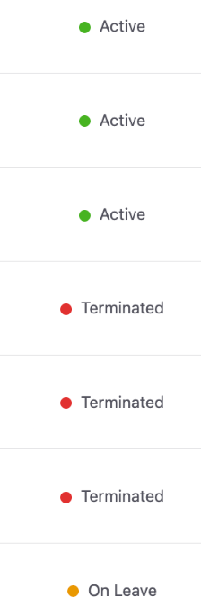
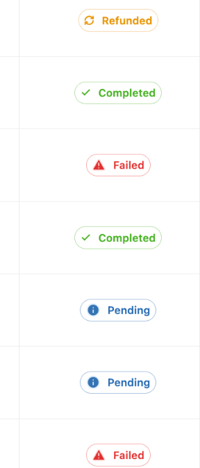
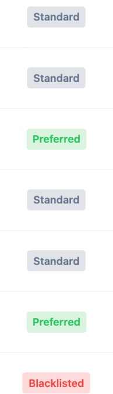
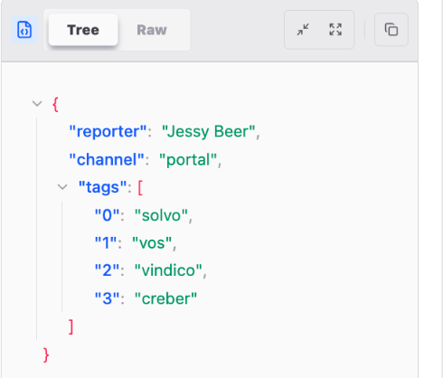
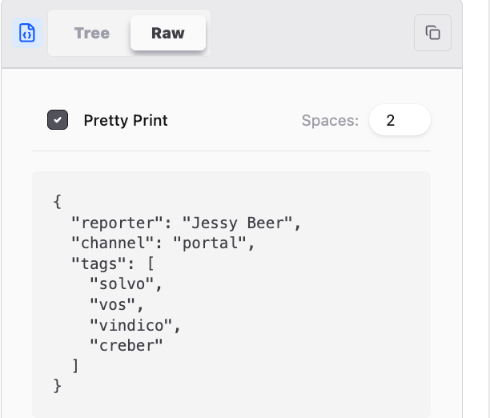
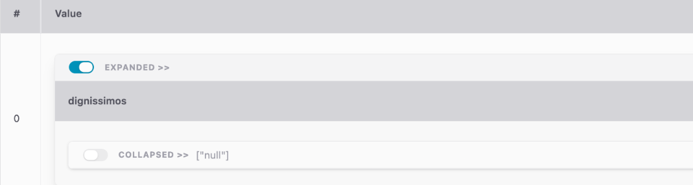
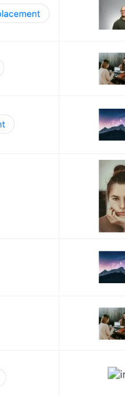

Table meta config: a field guide to every cell type
The one config object that decides how every column of a report table renders — status pills, links, dates, nested objects, and images. Verified directly against source, with a working JSON example and a live-rendered result for every field.
Read first: a naming collision that will confuse you otherwise
A sidebar report node's config object has a table
key holding the whole meta object documented here (TableMeta) —
and TableMeta itself has a table key further down
that means something completely different: “render this column as a nested/expandable
sub-table.” Two unrelated concepts share the same name, one nested inside the other.
config.table.table is not a typo — it's TableMeta.table
(§2, nested-object rendering) sitting inside config.table (the whole meta
object). Keep this straight when reading or writing config.
End-to-end flow: authored as part of a sidebar node's config.table
(configs/sidebar.tsx, or the equivalent Cosmos-backed sidebar document in
production) → delivered to the client as ReportProps.config
(components/ui/table/index.tsx) → read column-by-column in
TableCellRenderer (components/ui/table/cell/index.tsx), which
dispatches on colname against each array below to decide how that cell renders.
Column basics
pagination, paginationMode, sortable, align,
and hidden — the fields that shape the table shell rather than any one cell.
No per-cell "rendered result" here; these affect layout/behavior, not a cell's markup.
{
"pagination": true,
// "offset" (numbered pager, default) or "cursor" (prev/next + continuation
// token) — "cursor" only takes effect when the report's source type is
// COSMOS; the server rejects it for anything else.
"paginationMode": "offset",
"sortable": [
{ "col": ["id"], "order": "desc" },
"name" // bare string = sortable, no default order
],
"align": {
"center": ["id", "status_dot"],
"end": ["amount"]
},
"hidden": ["object", "_uuid"]
}
align keys are "start" | "center" | "end". hidden columns
are still fetched but never rendered or toggle-able — different from a column simply not
being in the report's columns list.
Status rendering
Three visual treatments — dot, tag, chip —
driven by the same value-matching config. A column can only be in one of the three lists.
{
"status": {
"config": {
"success": ["Success", "Online", "Filled", "Passed", "True", "Open"],
"failed": ["Failed", "Offline", "Danger", "Blocked", "Not Passed", "False", "Closed"],
"info": ["Info", "Information"],
"warning": ["Warning", "Alert", "Partially Filled"],
// anything outside the four standard buckets gets its own exact hex
"custom": [
{ "value": ["Rejected"], "hex": "#6d5ae3" }
]
},
"type": {
"dot": ["status_dot"],
"tag": ["status_tag"],
"chip": ["status_chip"]
}
}
}
Dot

Chip

Tag

Joined, object, and nested-table cells
joined merges several source columns into one display column with a primary +
secondary line. object renders a JSON value as an expandable tree.
table (see the naming gotcha above) renders a column as a nested sub-table.
{
"joined": [
{ "head": ["name"], "sub": ["email", "normal"], "as": "joined" }
],
"object": ["object2"],
// TableMeta.table — NOT the sidebar node's config.table wrapper.
"table": ["object_render"],
// shorthand: a lone entry is a one-element array
// "table": "object_render",
// per-column depth override:
// "table": [{ "column": "object_render", "maxDepth": 3 }],
// default depth for every `table` column with no own maxDepth (fallback 5)
"tableDefaultMaxDepth": 5,
"truncate": ["object"]
}
joined (real output: a nested <table><thead>, not a plain div)Jane Doe jane@example.com Sales team |
|---|
Tree

Raw


Link cells
This is the whole usable surface today — a handful of fields the type accepts are currently disconnected from what renders. See below.
{
"link": [
{
"columns": ["Link"],
"config": {
"url": "https://dummyjson.com/auth/login",
"style": "plain"
}
}
]
}
TableMetaLinkConfig also types redirect/color
(MatchedRule[] — match the cell's own value, pick a
redirectOption/colorOption) and method/
headers/body/credentials (fetch-shaped options
reading like an earlier "POST an authenticated request" design). None of these
currently affect what renders: redirect/color are computed
by components/ui/table/cell/index.tsx but the props that would apply them
(color=, isExternal=, showAnchorIcon=) are
commented out, with a // TODO: wire up note (a HeroUI v2→v3 Link prop
migration leftover). The fetch-shaped fields are never used at all — the renderer
only ever reads url for the href. [key: string]: any
on the type means none of this is rejected, just silently ignored.
style: "plain" (the default). data-rac/data-react-aria-pressable are React Aria Components internals from HeroUI's Link, not authoredDate / time cells
{
"date": [
{
"columns": ["date2"],
"type": "datetime",
"format": "DD/MM/YYYY HH:mm:ss",
"timezoneConfig": {
"enableToggle": true,
"defaultView": "utc",
"localTimezone": "Asia/Bangkok",
"tabLabels": { "utc": "UTC", "local": "BKK" }
},
"constraints": {
"minDate": "today",
"disableWeekends": true
},
"pickerProps": {
"allowClear": false,
"showNow": true,
"placement": "bottomRight"
},
"readOnly": true,
"granularity": "minute",
"hourCycle": "24-hour"
}
]
}
type is date | time | datetime (default datetime).
constraints.minDate/maxDate accept an ISO string or the literal
"today". pickerProps is a raw passthrough to the underlying date
picker — treat anything not shown here as unverified.
Image, truncate, disabled
Three plain string[] fields, no nested config.
{
"image": ["avatar_url"],
"truncate": ["_uuid", "userAgent"],
"disabled": ["bank", "_uuid"]
}
disabled removes the column from columnDef entirely (not just
hidden). truncate clips long text with an ellipsis. image renders
through the app's image proxy (next/image + app/api/image-proxy)
instead of as text.
truncate (every default cell, truncated or not, is wrapped in a copy-to-clipboard button, not a plain span)
Rows 7 and 10 show the broken-image fallback — a real, occasional case (an Unsplash URL that didn't resolve for that request), not staged.
Full combined example
Every feature above, in one TableMeta object — extends the real config
already shipping in configs/sidebar.tsx.
{
"pagination": true,
"sortable": [{ "col": ["id"], "order": "desc" }],
"align": { "center": ["id"] },
"joined": [{ "head": ["name"], "sub": ["email", "normal"], "as": "joined" }],
"truncate": ["object"],
"status": {
"config": {
"success": ["Success", "Online"],
"failed": ["Failed", "Offline"],
"info": ["Info"],
"warning": ["Warning"],
"custom": [{ "value": ["Rejected"], "hex": "#6d5ae3" }]
},
"type": { "dot": ["status_dot"], "tag": ["status_tag"], "chip": ["status_chip"] }
},
"link": [
{
"columns": ["Link"],
"config": {
"url": "https://dummyjson.com/auth/login",
"style": "plain"
}
}
],
"object": ["object2"],
"table": ["object_render"],
"hidden": ["object"],
"date": [
{ "columns": ["date2"], "type": "datetime", "format": "DD/MM/YYYY HH:mm:ss" }
]
}
Open questions
TableMetaDateTime.pickerPropsis a raw passthrough — this guide only lists fields already used inconfigs/sidebar.tsx; the underlying date-picker library likely accepts more.TableMetaLinkConfig's[key: string]: anymeans any field name is technically accepted — treat anything not shown in §3 as unverified.actionButtons(Phase 2) is intentionally not covered here — it has its own separate design doc and will get its own field-guide section later.